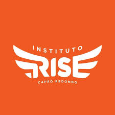

Instituto Rise

Principios do Instituto
Respeito
Inclusão
Empatia
Coragem
Inovação
Modalidades Treinadas
Corridas de velocidade
Lançamentos
Salto em distância
Provas Combinadas
Corridas de resistência